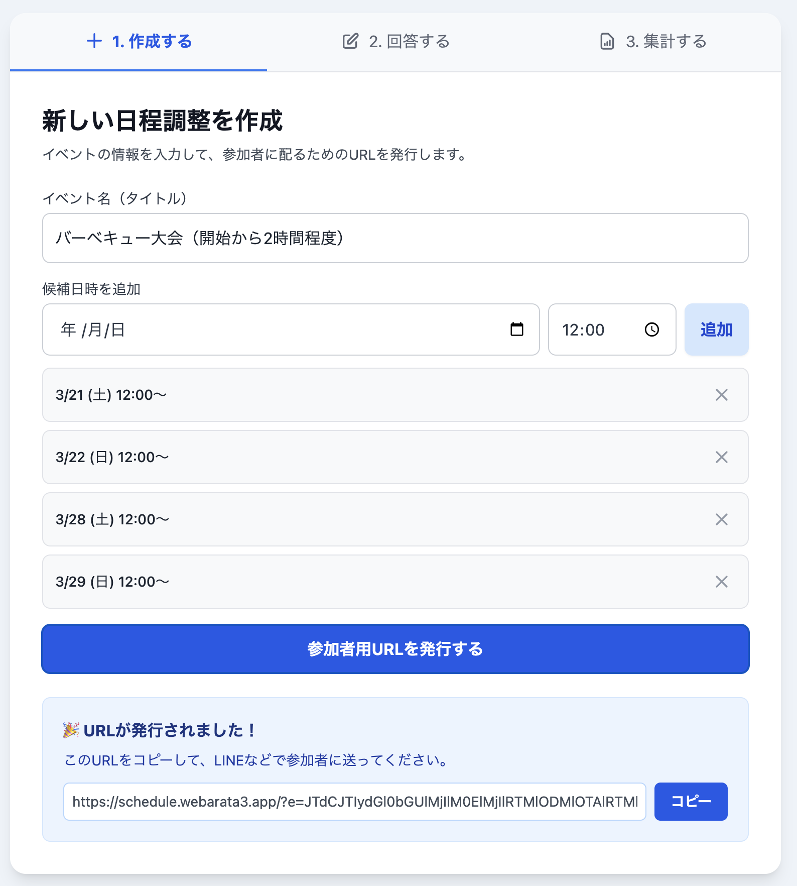
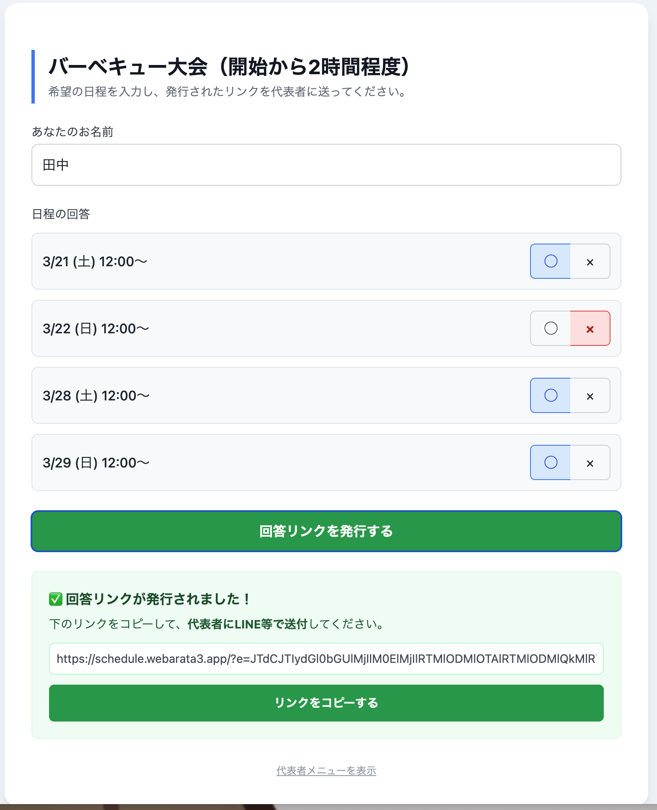
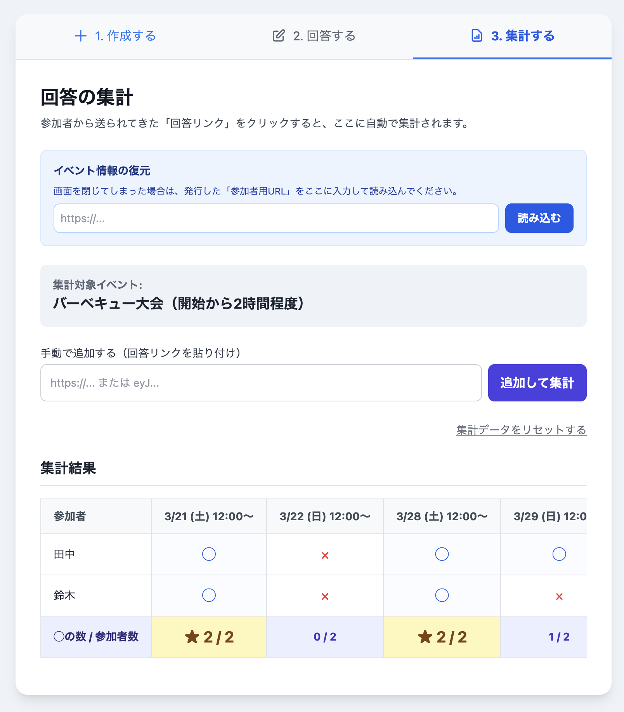

データはデータベースに保存されません。すべての情報はURLパラメータとしてやり取りされるため、情報漏洩のリスクが極めて低いです。
主催者も参加者も、面倒なログインやメールアドレスの登録は一切不要。サイトを開いてすぐに使い始めることができます。
参加者へのお知らせも、回答の回収も、すべて生成された「URL」をLINEやメッセージアプリで送り合うだけで完了します。
まずは主催者がイベントのベースを作ります。イベント名と候補となる日時を設定し、参加者へ送るための専用URLを発行します。

URLを受け取った参加者は、自分の都合を入力して「回答リンク」を発行し、主催者に送り返します。

主催者は、参加者から返ってきた回答リンクを自分の画面に貼り付けるだけで、自動的に結果が集計表としてまとまります。
